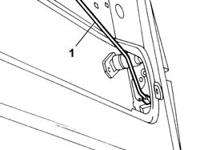
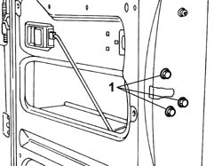

7020F10 REAR SWING DOOR LOCK
- Path
- Procedures > 70 FITTINGS > 7020 LOAD COMPARTMENT DOORS > 7020F REAR SWINGING DOOR CLOSURE DEVICES > 7020F10 REAR SWING DOOR LOCK
- Kind
- repair procedure (removal / refitting; the operation number is the code)
- Applies to
- all engines; all production periods
- Interactive page
- https://sloeber94.github.io/elrnDB-fDct/en/#/244001475
Applies to: all engines; all production periods
 Removing
Removing
 Refitting
Refitting- Disconnect the negative battery terminal.
Description | Connector | |
|---|---|---|
- | Negative battery terminal | A001B |
Op. 7020E34 REAR DOOR FLAP INTERIOR PANEL - R+R
- Disconnect the electrical connector.
Description | Connector | |
|---|---|---|
- | Right rear/right swing door lock coupling | D151 |
1. Release the lever rod from the lock.

Applies to: all engines; all production periods
1. Undo the bolts fixing the lock to the door.

Applies to: all engines; all production periods
- Remove the lock complete with safety closing rod.
Applies to: all engines; all production periods
Refitting
Removing- Place the lock on the door positioning the safety closing rod.
- Fasten the lock tightening the bolts to the recommended torque.
Value - daNm | Fastening | Component | Ø | |
|---|---|---|---|---|
- | 1.5 daNm | bolt | - | M8 |
- Connect the electrical connector.
Description | Connector | |
|---|---|---|
- | Right rear/right swing door lock coupling | D151 |
Op. 7020E34 REAR DOOR FLAP INTERIOR PANEL - R+R
- Connect the negative battery terminal.
Description | Connector | |
|---|---|---|
- | Negative battery terminal | A001B |